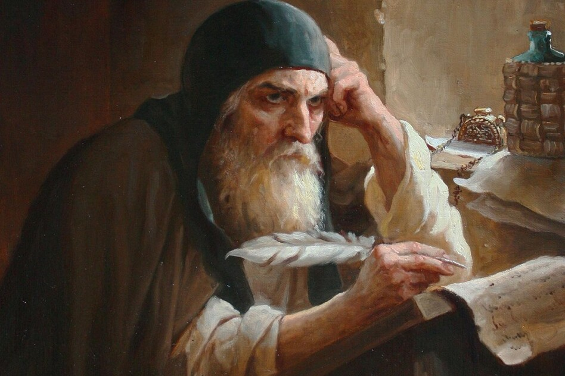

"Мова - душа народу"
"Без мови немає народу" — Тарас ШевченкоЩо це за свято?
Кожного року 9 листопада ми відзначаємо День української писемності та мови. Це свято не лише нагадує нам про важливість рідного слова, а й вшановує пам’ять Нестора Літописця — першого українського історика.
Мандрівка крізь віки
Українська мова має багатолітню історію. Від перших літописів — до сучасних чат-ботів!
- XI ст. — з’являються перші літописи у Київській Русі
- XVI ст. — Іван Федоров друкує перші українські книги
- XIX ст. — Тарас Шевченко, Леся Українка та Франко формують нову українську літературну мову
- XXI ст. — українська активно розвивається в інтернеті, ІТ, на телебаченні та в кіно
Неймовірна українська
- Посідає 7-ме місце у світі за милозвучністю
- Має близько 256 000 слів!
- Одна з найдавніших слов’янських мов
- Має багато діалектів: гуцульський, лемківський, поліський
Гра «Знайди пару: староукраїнські слова»
Спробуй знайти правильне значення слова!
Зірки української літератури
- Тарас Шевченко: "І чужому научайтесь, й свого не цурайтесь"
- Леся Українка: "Contra spem spero!"
- Іван Франко: "Я син народу, що вгору йде"
- Сучасність: Володимир Рутківський, Лада Лузіна, Сашко Дерманський
Підтримуємо мову щодня
- Читай українське — книги, блоги, комікси!
- Дивись фільми українською
- Говори рідною мовою щодня
- Грай українською — ігри, квести, вікторини
- Створюй контент — TikTok, YouTube, Instagram українською!
Вікторина
1. Хто написав "Кобзаря"?
Тарас Шевченко
Леся Українка
Іван Франко
2. Як звали першого українського друкаря?
Іван Федоров
Петро Могила
Михайло Грушевський
3. Як буде англійське "computer" українською?
Компутер
Комп’ютер
Машина
Наша суперсила — українська мова!
"Любіть і бережіть українську мову — це наш найбільший скарб!"